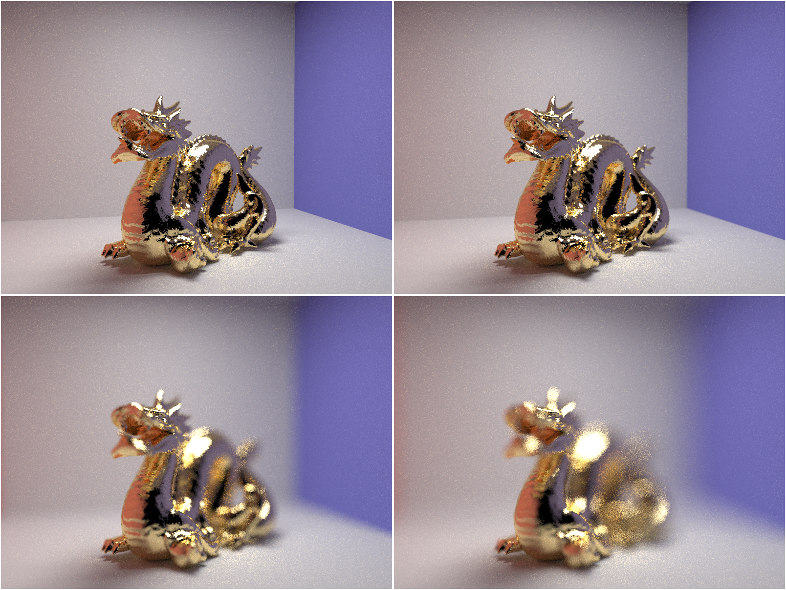

In this project, I implemented more advanced aspects of a 3D ray-tracing renderer. I added rendering for complex materials, support for environment maps, and depth of field. I also explored normal maps and bumpmaps.
Notes:
For this part, we implement rendering for mirror and glass materials. Reflection was fairly simple to implement; a flip over the and axes while keeping the same. Refraction is a bit more complex, and was implemented as described in the spec:
Source: Project spec
As we increase the number of bounces of light in our image, we see more effects propogate due to both reflection and refraction. Below, I’ve rendered CBSpheres.dae with max_ray_depth set to 0, 1, 2, 3, 4, 5, and 100. To generate these images, I ran the script:
function 1_helper() {
make && ./pathtracer -t 20 -s 64 -l 4 -m $1 -r 480 360 -f ./1_depth_$1.png ../dae/sky/CBspheres.dae
}
function 1_primitives() {
1_helper 001 &&
1_helper 002 &&
1_helper 003 &&
1_helper 004 &&
1_helper 005 &&
1_helper 100;
rm *rate.png &&
montage 1_depth*.png -tile 2x3 -geometry +2+2 1_depth.png;
rm *depth_*.png;
1_helper_0;
}
The zero-bounce image consists of only our emitting sources.
With more bounces, our render gets more interesting. Left to right, bottom to top: 1, 2, 3, 4, 5, and 100 bounces.
Lighting effects propogate with multiple bounces.
With the first bounce, we finally get shadows; with the second, we get our first taste of global illumination - and excitingly, our first taste of reflection. Intuitively, we can understand requires a minimum of 2 bounces - to reflect off something, light must hit an object first, so we’re bounded to a minimum of two rays.
We see refraction being introduced with 3 bounces - which also makes intuitive sense as the lower bound for refraction (i.e. to refract, light must hit an object, traverse through it, and exit the object). With 4 bounces, we see the highlight below the glass sphere, with 5, we see the highlight on the side of the wall, and with 100, we see finer details of the previous bounces reflected on the mirror sphere. Regardless, It is hard to tell if 100 bounces makes any differences with render settings as low as the ones given in the spec.
Microfacets help us approximate surface qualities such as roughness and reflectivity. In essence, this allows to model ranging from a near-ideal mirror to a completely worn, diffuse metal.
The microfacet BRDF was implemented:
Where the term is our Fresnel term, our shadow masking term, and our normal distribution function.
The fresnel term is also known as the “reflection” term, and this is where the index of refraction and for our different materials are implemented. The normal distribution term is where we can specify our roughness , where a smaller corresponds to a smoother surface.
How do these terms come into play? Below, I’ve implemented CBdragon_microfacet_au.dae rendered with set to 0.005, 0.05, 0.25 and 0.5. I used the following command to render the image below:
function 2_helper() {
./pathtracer -t 20 -s 128 -l 1 -m 5 -r 480 360 -f ./2_microfacet_$1.png ../dae/sky/CBdragon_microfacet_au_$1.dae
}
function 2_microfacet() {
2_helper 0005 &&
2_helper 0050 &&
2_helper 0250 &&
2_helper 0500;
rm *rate.png &&
montage 2_microfacet*.png -tile 2x2 -geometry +2+2 2_microfacet.png;
rm *microfacet_*.png;
}
Top left: . Top right: . Bottom left: . Bottom right: .
As increases, we see the glossiness of our dragon decrease.
We can also change the material of our dragon by modifying and . Below, I present to you the Titanium Dragon!
To create this image, I made a file CBdragon_microfacet_titanium.dae with the modifications to (to simulate a less polished look) and and (from refractiveindex.info, plugging in 614 nm for red, 549 nm for green, and 466 nm for blue).
<alpha>0.08</alpha>
<eta>2.6640 2.5400 2.3075</eta>
<k>3.7080 3.4300 3.0850</k>
I then rendered the image with the command:
./pathtracer -t 20 -s 128 -l 1 -m 5 -r 480 360 -f ./2_titanium.png ../dae/sky/CBDragon_microfacet_titanium.dae
The Titanium Dragon!
The dragon reflects colors characteristic of titanium, giving us a taste of how powerful the microfacet equations can be when trying to simulate different materials.
Throughout this part, we’ve been importance sampling the microfacet BRDF. We can compare how images look when using importance sampling as opposed to cosine hemisphere sampling.
To generate the images below, I ran
./pathtracer -t 20 -s 64 -l 1 -m 5 -r 480 360 -f ./2_3_importance.png ../dae/sky/CBbunny_microfacet_cu.dae
and, after changing Spectrum MicrofacetBSDF::sample_f to simply return
*wi = cosineHemisphereSampler.get_sample(pdf); //placeholder
return MicrofacetBSDF::f(wo, *wi);
I ran
./pathtracer -t 20 -s 64 -l 1 -m 5 -r 480 360 -f ./2_3_direct.png ../dae/sky/CBbunny_microfacet_cu.dae
montage 2_3_*.png -tile 2x2 -geometry +2+1 2_comparison.png;
Left: Cosine Hemisphere. Right: Importance Sampling.
Importance sampling is far less noisy than cosine-hemisphere sampling (i.e. we converge much faster).
So far, we’ve been working with point lights and area lights. However, if we want to generate truly realistic renders, we must introduce a third concept: environment lights. We take a texture map parameterized by and and to obtain the intensity of light from any incoming direction. Importance sampling computes a marginal distribution , selects some , then samples a pixel in row using a conditional distribution , which it then converts to a direction vector alongside radiance and PDF values. Importance sampling significantly decreases the time to convergence, as illustrated below.
To generate these images, I ran
./pathtracer -t 20 -s 4 -l 64 -m 4 -r 480 360 -e ../exr/field.exr ../dae/sky/bunny_unlit.dae
with importance sampling disabled and enabled.
field.exr was used for these images, and it looks like this:

The image looks a bit brighter than it should due to conversion artefacts when using ImageMagick.
The probability map importance sampling generates is as follows:

And comparing both uniform and importance sampling on bunny_unlit.dae yields the following results:
Left: Uniform sampling. Right: Importance sampling.
Importance sampling is slightly less noisy, especially in shadowed areas (i.e. near the bunny tail). In essence, more of the environment light is captured even in shadowy areas in importance sampling, which makes sense, as we’re now more likely to sample higher light emitting areas.
Importance sampling took significantly less time to converge.
And on bunny_microfacet_cu_unlit.dae:
The difference is similar to above, where importance sampling results in slightly brighter and consistent shadows due to more appropriately sampling the environment lights.
To make our images look more photographic or cinematic (i.e. as a real camera might see them), we move on to simulating lenses. We simulate an ideal thin lens, in essence, a lense that refracts like a real lens but without taking the physical thickness of the lens into account.

The basic principle behind simulating a thin lens. (Source: Project spec.)
We can vary our focal distance to simulate depth of field. Below, I present CBDragon.dae simulated with 4 different depth of fields. To generate this image, I ran
function 4_dof_helper() {
./pathtracer -t 20 -c cam_dof_$1.txt -s 128 -l 8 -m 8 -f ./4_dof_$1.png ../dae/sky/CBdragon.dae
}
function 4_dof() {
4_dof_helper 1.0
4_dof_helper 1.3
4_dof_helper 1.6
4_dof_helper 1.9
rm *rate.png
montage 4_dof*.png -tile 2x2 -geometry +2+2 4_dof.png;
}
Focal distances: top left - 1.0, top right - 1.3, bottom left - 1.6, bottom right - 1.9.
As our focal distance moves backwards, we see the “slice” of image in focus also moving backwards.
We can also vary our aperture. Below is CBDragon.dae simulated with 4 apertures. To generate this image, I ran
function 4_aperture_helper() {
./pathtracer -t 20 -c cam_aper_$1.txt -s 128 -l 8 -m 8 -f ./4_aper_$1.png ../dae/sky/CBdragon.dae
}
function 4_aper() {
4_aperture_helper 0.001
4_aperture_helper 0.010
4_aperture_helper 0.100
4_aperture_helper 0.250
rm *rate.png
montage 4_aper*.png -tile 2x2 -geometry +2+2 4_aper.png;
}

Apertures: top left - 0.001, top right - 0.010, bottom left - 0.100, bottom right - 0.250
As we increase our aperture, our image becomes increasingly blurred. Notice how the tiny aperture simulates the camera we’ve been using all along.
Shader programs are usually highly parallelizable isolated programs that can run on the GPU. They take an input and output a 4D vector. We have both vertex and fragment shaders, where each shader operates once per vertex or fragment. Fragment shaders output the color of the surface at our screen sample position; vertices can adjust the geometry of the image.
Blinn-Phong shaders allow us to produce a more realistic rendering of glossy models. They accomplish this by adding an ambient factor and a specular factor, where the specular factor is dependent on the position of our camera and used to simulate the reflective aspect.
Essentially, Blinn-Phong shading can be summarized as follows:
CS186 Pipeline Lecture, Slide 30
Where specular shading is implemented as follows:
CS186 Pipeline Lecture, Slide 26
In my own shader implementation, the breakdown of the Blinn-Phong shader can be viewed as such:
Top left to bottom right: ambient, diffuse, specular, all three combined
Shading is important, but we also must know how to map a texture to our meshes. Here, I texture-mapped a texture of Earth at night to a sphere:
I utilized techniques such as bumpmapping and displacement mapping to simulate more complex geometries:
Bump mapping affects how our light interacts with the surface without modifying the actual geometry of the object, allowing us to create the illusion of complex geometries at high speed. Displacement mapping affects the geometry based off of the texture. The difference is most visiblle at the edges of the bricks, where in bump mapping, one can see it’s an illusion. Displacement mapping, understandably, is much more difficult to render than bump-mapping, but OpenGL and modern processors are robust enough to handle it without a sweat.
Modifying the 2nd and 3rd arguments to the SphereBufferGeometry constructor affects the detail of the render. Below, I’ve changed the 2nd and 3rd arguments to 64:
We see a visible reduction in detail for both bump and displacement mapping.
Finally, for my custom shader, I implemented time-varying normal maps and bump maps to give the appearance of some eldritch horror: